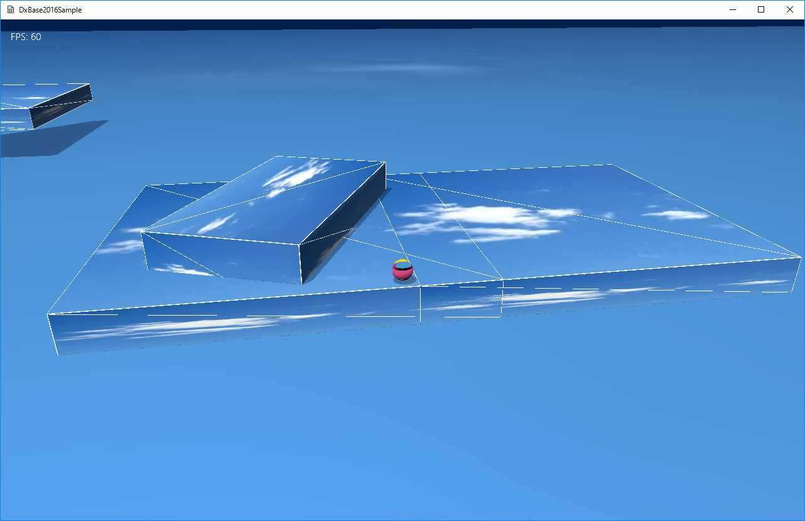

１、移動する物体の同じ形状（同じ回転角度）を維持したまま、前回ターン時の位置と、 今回のターン時の位置を出して、その間の衝突を判定する ２、1回のターンで衝突する相手は1個のみと限定

図1012a
この画面はチュートリアル006を修正したものですが、右側のブロックに回転するブロックが乗っています。
void RollingBox::OnCreate(){
auto PtrTransform = AddComponent<Transform>();
PtrTransform->SetScale(m_Scale);
PtrTransform->SetRotation(m_Rotation);
PtrTransform->SetPosition(m_Position);
//CollisionObbコンポーネントをつける
//これはOBBを取り出すためのみに使用
auto PtrObb = AddComponent<CollisionObb>();
PtrObb->SetUpdateActive(false);
AddComponent<PNTCollisionDraw>();
//アクションの登録
auto PtrAction = AddComponent<Action>();
//2秒で90度回転
PtrAction->AddRotateBy(2.0f, Vector3(0.0f, XM_PIDIV2, 0.0f));
//ループする
PtrAction->SetLooped(true);
//アクション開始
PtrAction->Run();
//影をつける
auto ShadowPtr = AddComponent<Shadowmap>();
ShadowPtr->SetMeshResource(L"DEFAULT_CUBE");
auto PtrDraw = AddComponent<PNTStaticDraw>();
PtrDraw->SetMeshResource(L"DEFAULT_CUBE");
PtrDraw->SetTextureResource(L"SKY_TX");
PtrDraw->SetOwnShadowActive(true);
}
PtrObb->SetUpdateActive(false);
//ターンの最終更新時
void Player::OnLastUpdate(){
//回転するOBBは手動で衝突判定を行う
auto RollPtr = GetStage()->GetSharedGameObject<RollingBox>(L"RollingBox");
auto CollObb = RollPtr->GetComponent<CollisionObb>();
auto Obb = RollPtr->GetComponent<CollisionObb>()->GetObb();
auto GraPtr = GetComponent<Gravity>();
auto SpPtr = GetComponent<CollisionSphere>();
auto Sp = GetComponent<CollisionSphere>()->GetSphere();
//重力を取り出す
auto PtrGravity = GetComponent<Gravity>();
Vector3 RetVec;
if (HitTest::SPHERE_OBB(Sp, Obb, RetVec)){
//衝突した
if (SpPtr->CheckOnObjectBase(RollPtr)){
//OBBの上に乗っている
auto BaseY = Obb.m_Center.y + Obb.m_Size.y;
//重力の最下地点を設定
PtrGravity->SetBaseY(BaseY + 0.125f);
PtrGravity->SetOnObject(RollPtr);
}
else{
SpPtr->SetHitObject(RollPtr);
auto Velo = GetComponent<Rigidbody>()->GetVelocity();
auto Rep = Sp.m_Center - RetVec;
Rep.Normalize();
Rep *= 5.0f;
GetComponent<Rigidbody>()->SetVelocity(Rep);
//最下地点
PtrGravity->SetBaseY(0.125f);
}
}
else{
//最下地点
PtrGravity->SetBaseY(0.125f);
}
//中略
}
//重力の最下地点を設定
PtrGravity->SetBaseY(BaseY + 0.125f);
//移動の向きを得る
Vector3 Player::GetAngle(){
Vector3 Angle(0, 0, 0);
//コントローラの取得
auto CntlVec = App::GetApp()->GetInputDevice().GetControlerVec();
if (CntlVec[0].bConnected){
if (CntlVec[0].fThumbLX != 0 && CntlVec[0].fThumbLY != 0){
//中略
auto OnObj = GraPtr->GetOnObject();
if (OnObj){
auto OnRot = OnObj->GetComponent<Transform>()->GetRotation();
TotalAngle += OnRot.y;
}
//中略
}
}
return Angle;
}